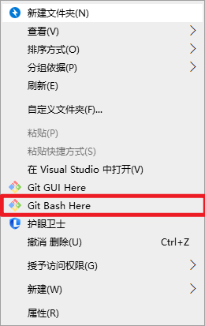

博客搭建记录 #
〇、 环境安装 #
0. 注册github和安装Git #
Git是目前世界上最先进的分布式版本控制系统，可以有效、高速的处理从很小到非常大的项目版本管理。Git的作用是将本地的网页文件传到github上。
windows： 到git官网上下载.exe文件,Download git,安装选项全部默认即可。
github 给学生提供免费的代码托管服务，并且提供
GitHub Pages 让你的网站直接托管在 GitHub 的服务器上，通过
http://xxx.github.io 来访问。更新维护网站内容也可以通过 git commit 和 git push 进行更新维护，因为 GitHub Pages 就是 GitHub 上的一个 Git 代码仓库。
GitHub注册这里不再赘述，如果网址无法访问，你可能需要科学上网。
1. 安装Hugo #
下载Hugo
打开 Github 中的 Hugo 库，打开右侧的 Realeases，下载最新的版本。推荐下载extended版本，因为有些主题的需要利用进行 SCSS/SASS 构建，如果下普通版就可能会报错显示： you need the extended version to build SCSS/SASS

安装Hugo
将下载好的压缩包解压到你喜欢的目录下，记住这个目录。然后将该目录添加到系统环境变量的 Path 下。

安装验证：
在 cmd 或 git bash 中输入 hugo version ，如果输出版本信息，则说明安装成功。
$ hugo version
hugo v0.126.2-8f3d902ce51512931f5759e9279d93e346c9e649+extended windows/amd64 BuildDate=2024-05-30T15:19:22Z VendorInfo=gohugoio
一、新建Hugo网站 #
找个目录，用于存放网站文件，在目录下命令行执行
hugo new site blog
即可完成网站新建。
二、更换主题 #
对于一般主题更换，将对应主题的代码 拉取/下载 到博客目录下的 theme 目录即可。
之后运行
hugo server -t 主题名 --build
我本次使用的是 Blowfish 主题，其还提供了一种傻瓜式的安装方式，即首先安装
npm i -g blowfish-tools
然后在博客路径下执行
blowfish-tools
即可进行交互式的主题安装与设置
三、页面配置 #
CLI 工具傻瓜是傻瓜，但是一个个配置挺慢的，我还是用文件配置吧…
3.1 基本信息配置 #
个人信息配置 #
因为blowfish 默认的是英文信息，首先在博客目录下的 config\_default 目录下，复制languages.en.toml 和 menus.en.toml ，并重命名为languages.zh-cn.toml 和 menus.zh-cn.toml
languages.zh-cn.toml可以这么写
languageCode = "zh-cn" # 网站使用的语言代码
languageName = "Simplified Chinese (China)" # 网站使用的语言名称
weight = 1 # 当前语言页面的排序权重
title = "JiBinquan's blog" # 网页标题
# 参数配置
[params]
displayName = "中文" # 显示的语言名称
isoCode = "zh-cn" # 国际标准语言代码
rtl = false # 是否是从右到左的语言
dateFormat = "2006年1月2日" # 日期格式
logo = "" # 网站标志图片路径
# secondaryLogo = "img/secondary-logo.png" # 第二标志图片路径
description = "JiBinquan的博客" # 网站的描述
copyright = "©️ { year } Ji Binquan" # 版权信息，包含动态的年份占位符
# 作者信息
[author]
name = "Ji Binquan" # 作者姓名
image = "/img/avatar.png" # 作者头像图片路径
headline = "随便写写" # 作者的口号或座右铭
bio = "现在也没研究明白的研究僧" # 作者的简短传记
# 作者的社交媒体链接列表，还可以添加更多
links = [
{ github = "" }, # GitHub 链接
{ email = "" }, # 电子邮件链接
{ qq = "" }, # QQ 链接
{ zhihu = "" }, # 知乎链接
]
头像放在assets\img 路径下（若没有建立目录即可），如果你的links没有默认的图标，可以把同名图标放置在assets\icons路径下
目录配置 #
menus.zh-cn.toml是目录配置，可以根据你的需要自己配置目录，可以参考如下编写。
[[main]]
name = "文章"
pageRef = "posts"
weight = 10
[[main]]
name = "研究"
parent = "文章"
pageRef = "tags/研究/"
weight = 21
[[main]]
name = "技术"
parent = "文章"
pageRef = "tags/技术/"
weight = 22
[[main]]
name = "友链"
pageRef = "friends"
weight = 30
[[footer]]
name = "关于"
pageRef = "about"
weight = 10
[[footer]]
name = "Tags"
pageRef = "tags"
weight = 30
BaseURL配置 #
如果你要部署到GithubPages上，请在 config\_default\hugo.toml 中设置为你自己的.github.io域名，或者你自己绑定的其他域名，如下例所示，否则一些页面跳转功能和搜索功能将失效。
# -- Site Configuration --
# Refer to the theme docs for more details about each of these parameters.
# https://blowfish.page/docs/getting-started/
theme = "blowfish" # UNCOMMENT THIS LINE
baseURL = "https://jibinquan.github.io/"
defaultContentLanguage = "zh-cn"
3.2 页面布局配置 #
主要都在config\_default\params.toml下，这里是主要的配置表：
这些设置是用于配置一个名为 Blowfish 的网站主题的。每个选项控制不同的功能和显示特性，使你可以根据需要自定义网站的外观和行为。以下是每个设置的简要说明：
主题选项 (Theme Options) #
colorScheme: 设置网站的配色方案。例子中为 “blowfish”。defaultAppearance: 设置网站的默认外观，可以是 “light” 或 “dark”。autoSwitchAppearance: 自动切换外观，依据用户的系统设置。enableSearch: 启用或禁用搜索功能。enableCodeCopy: 启用或禁用代码复制功能。
图像和文本设置 #
disableImageOptimization: 禁用图像优化。disableTextInHeader: 禁用标题中的文本。defaultBackgroundImage: 设置默认背景图像。defaultFeaturedImage: 设置所有文章的默认特色图像。
页眉和页脚 (Header and Footer) #
[header] layout: 设置页眉布局方式。[footer] showMenu,showCopyright,showThemeAttribution,showAppearanceSwitcher,showScrollToTop: 设置页脚显示的内容和功能。
主页设置 (Homepage) #
[homepage] layout: 设置主页布局方式。homepageImage: 主页图像。showRecent,showRecentItems,showMoreLink,showMoreLinkDest,cardView,cardViewScreenWidth,layoutBackgroundBlur: 控制主页上显示的最近项目及其展示方式。
文章设置 (Article) #
[article]下的各个设置控制文章页面的各种显示选项，例如日期、浏览次数、作者信息、面包屑导航、分页等。
列表页面设置 (List) #
[list]下的各个设置控制列表页面的显示选项，如是否显示摘要、卡片视图、按年份分组等。
网站地图 (Sitemap) #
[sitemap] excludedKinds: 排除的内容类型。
分类和标签 (Taxonomy and Term) #
[taxonomy]和[term]下的各个设置控制分类和标签页面的显示选项。
分析和验证 (Analytics and Verification) #
[firebase],[fathomAnalytics],[umamiAnalytics]: 分析工具的配置选项。[buymeacoffee]: 支持 Buy Me a Coffee 功能的设置。[verification]: 用于搜索引擎验证的设置，如 Google、Bing、Pinterest 和 Yandex。
如果需要更多详细信息，可以参考主题文档： 配置 · Blowfish。
3.3 功能修改 #
3.3.1 内联数学公式修改 #
Typora自带的内联公式语法是 $ ... $ ，而Blowfish默认的KaTeX渲染语法是\\( ... \\) ，在这种模式下，你要不就放弃在Typora上预览内联公式，要不就放弃在网页上渲染内联公式…属实离谱。于是我们找到了以下解决方法：
javascript - 如何使用 KaTeX 渲染 $..$ 中的所有内联公式？_Stack Overflow中文网
来到文件\themes\blowfish\assets\lib\katex\auto-render.min.js，找到其中代码
n.delimiters=n.delimiters||[{left:"$$",right:"$$",display:!0},{left:"\\(",right:"\\)",display:!1},{left:"\\begin{equation}",right:"\\end{equation}",display:!0},{left:"\\begin{align}",right:"\\end{align}",display:!0},{left:"\\begin{alignat}",right:"\\end{alignat}",display:!0},{left:"\\begin{gather}",right:"\\end{gather}",display:!0},{left:"\\begin{CD}",right:"\\end{CD}",display:!0},{left:"\\[",right:"\\]",display:!0}]
改成
n.delimiters=n.delimiters||[{left:"$$",right:"$$",display:!0},{left:"$",right:"$",display:!1},{left:"\\begin{equation}",right:"\\end{equation}",display:!0},{left:"\\begin{align}",right:"\\end{align}",display:!0},{left:"\\begin{alignat}",right:"\\end{alignat}",display:!0},{left:"\\begin{gather}",right:"\\end{gather}",display:!0},{left:"\\begin{CD}",right:"\\end{CD}",display:!0},{left:"\\[",right:"\\]",display:!0}],n.ignoredTags=n.ignoredTags||
那么，在你的文章需要使用公式的时候，只需在开头加上一行
即可。（我也不知道这样改会有什么问题，先这么着吧）
找着问题了…
\\公式换行不能用了……
3.3.2 字数统计 #
如果你发现页面统计的字数远远少于文章的字数，请在hugo.toml中加入下面一行：
hasCJKLanguage = true
四、部署到Github #
4.1 创建仓库 #
在Github方面，需要新建两个仓库。一个是网页源代码仓库，便于进行版本管理。一个是 Github Page 仓库，用于网页部署。
新建仓库在 Your Repositories 下选 New 就行。
需要注意的是 GitHub Pages 仓库：
- 必须使用特殊的命名格式
<username.github.io>，<username>是你的 GitHub 的用户名，如下图所示。

- 需要勾选 Public，设置为公开仓库。
- 勾选添加 README 文件，这会设置
main分支为仓库的默认主分支。
4.2 生成静态网页 #
在 Hugo 网站文件夹的根目录下执行 hugo 命令构建静态 HTML 网页，生成的 HTML 文件默认存放在 public 文件夹中。
示例：
$ hugo
Start building sites …
hugo v0.126.2-8f3d902ce51512931f5759e9279d93e346c9e649+extended windows/amd64 Bu
ildDate=2024-05-30T15:19:22Z VendorInfo=gohugoio
| ZH-CN | EN
-------------------+-------+-----
Pages | 36 | 11
Paginator pages | 0 | 0
Non-page files | 28 | 0
Static files | 8 | 8
Processed images | 86 | 0
Aliases | 10 | 0
Cleaned | 0 | 0
Total in 450 ms
hugo进行网页构建，而不能使用hugo server否则会将baseurl编译为本地链接导致部署后搜索等部分功能失效。
4.3 git 初始化与部署 #
-
首先在根目录下，新建一个
.gitignore文件， 写入如下内容：public/因为
public目录需要单独上传到Github Page仓库，如果不进行忽略的话会造成嵌套无法进行初始化。 -
完成后在根目录下，
git bash运行（后续操作都在git bash下进行）git init -b main -
如果你是
Windows系统，可能需要取消Git自动的换行替换即执行：
git config core.autocrlf false具体详见 windows系统下github_pages部署hugo页面js与css无法使用或文档渲染出错问题
-
如果你还没有申请SSH-Key，请先参考下面的文章，进行SSH-Key的申请，否则无法通过SSH进行
git上传具体详见 为github设置ssh-key
-
将博客文件夹关联远程 GitHub Pages 仓库，使用 GitHub Pages 仓库的 SSH 链接。
首先获得SSH链接

然后运行（注意把链接替换为你自己的）
git remote add origin git@github.com:JiBinquan/My_Blog.git -
之后就是先拉取，后推送
git pull --rebase origin main # 拉取远端仓库现有的文件 git add . # 添加修改过得文件， . 表示所有，也可以指定文件 git commit -m "FST" # 提交内容的说明信息 git push origin main # 推送到远端main分支 -
之后就是进入
public目录，对Github Pages进行相同的操作（.gitignore文件可以不用了，注意这里远端SSH链接是Github Pages仓库中获取的）git init -b main git config core.autocrlf false git remote add origin git@github.com:Jibinquan/Jibinquan.github.io.git # 这里是Github Pages仓库的SSH链接，不要搞混 git pull --rebase origin main git add . git commit -m "FST" git push origin main -
转到 GitHub 查看相关仓库中是否存在刚刚推送的文件，存在则代表推送成功。
如果没有问题的话，现在访问Yourusername.github.io应该就能看到你的博客啦
五、后续文章更新与部署 #
5.1 新建文章 #
-
新建文件，在根目录下：
hugo new posts/NewArticle/index.md -
找到对应目录下找到
index.md进行修改，图片可以新建一个pic目录放到里面，blowfish还支持特征图和背景图定制，只需要命名为feature.jpg/png和background.jpg/png即可 -
本地预览，根目录下：
hugo server -D -
没问题后，构建静态网页
hugo -
来到
public目录下，进行推送git add . git commit -m "更新内容" git push origin main
5.2 删除文章 #
在content和public直接删除相关目录即可，然后进行构建推送
hugo
git add .
git commit -m "更新内容"
git push origin main
结语 #
第一次部署博客对于前端苦手的我还是太折磨了，各种bug整到崩溃，后续需要啥功能等有空了再说吧……
参考文献 #
Github Pages + Hugo 搭建个人博客 - 渣渣的夏天 (zz2summer.github.io)